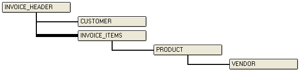

Syntax
Table_Name as C =
Description
The
Example
The following illustration shows the structure of the invoice set.

The following example shows that in the invoice set the customer_id field is a linking field that connects the customer table one-to-one ("First") to the invoice_header table. The invoice_number field links the invoice_items table many-to-one ("Many") to the invoice_header table.
|
dim tbl as P dim fld as P tbl = table.open("invoice.set") fld = tbl.field_get("customer_id") ? fld.link_table_get() = "CUSTOMER" ? fld.link_type_get() = "First" fld = tbl.field_get("invoice_number") ? fld.link_table_get() = "INVOICE_ITEMS" ? fld.link_type_get() = "Many" |
See Also
Field Functions and Methods, Set Functions and Methods